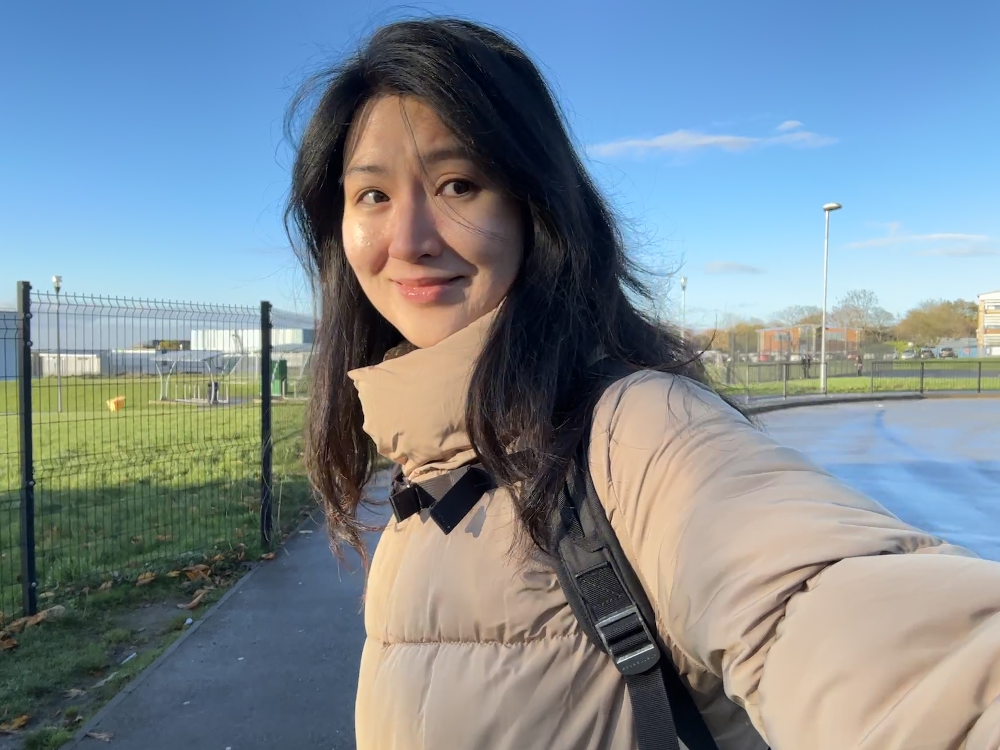

Hey, welcome! You probably know me as Xi-Ning Wang, Xining, or Ning. Others may or may not pronounce or write my name correctly, which is a bit annoying (to me). So, for your convenience, Ning is simple, and it can work for me too.
Recent News:
I am moving back to Asia soon to start a new position.
Old News:
I completed my PhD in Education & Human-Computer Interaction (HCI) at Trinity College Dublin (School of Computer Science & Statistics, School of Education), Ireland.
I worked as a research fellow (postdoc) at the NHS and the School of Medicine, School of Management at the University of St Andrews, UK. I was also a guest researcher at the Institute of Psychology, University of Copenhagen, Denmark.
From above information, you may understand that my research and teaching expertise lies at the intersection of Psychology, Computer Science, and Education.
Contact: xwang8@tcd.ie